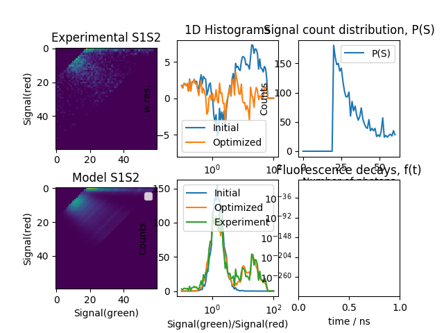

Note
Click here to download the full example code
Single molecule photon distribution analysis - 2

Out:
/home/travis/build/Fluorescence-Tools/tttrlib/examples/single_molecule/plot_single_molecule_pda_2.py:125: RuntimeWarning: invalid value encountered in true_divide
fit_wres = (y_data - y_model_fit) / np.sqrt(y_data)
No handles with labels found to put in legend.
import glob
import numpy as np
import scipy.optimize
import pylab as p
import tttrlib
# open a set of files and stack them in a single TTTR object
files = glob.glob('../../test/data/bh/bh_spc132_sm_dna/*.spc')
data = tttrlib.TTTR(files[0], 'SPC-130')
for d in files[1:]:
data.append(tttrlib.TTTR(d, 'SPC-130'))
# Compute the experimental histograms
# # define what is PDA channel 1 and channel 2
channels_1 = [0, 8] # 0, 8 are green channels
channels_2 = [1, 9] # 1,9 are red channels
minimum_number_of_photons = 20
maximum_number_of_photons = 60
minimum_time_window_length = 1.0
s1s2_e, ps, tttr_indices = tttrlib.Pda.compute_experimental_histograms(
tttr_data=data,
channels_1=channels_1,
channels_2=channels_2,
maximum_number_of_photons=maximum_number_of_photons,
minimum_number_of_photons=minimum_number_of_photons,
minimum_time_window_length=minimum_time_window_length
)
# define a Pda object
kw_pda = {
"hist2d_nmax": maximum_number_of_photons,
"hist2d_nmin": minimum_number_of_photons,
"pF": ps
}
pda = tttrlib.Pda(**kw_pda)
# set a function to make a 1D histogram
# pda.histogram_function = lambda ch1, ch2: ch2 / max(1, (ch2 + ch1))
pda.histogram_function = lambda ch1, ch2: ch1 / max(1, ch2)
# define a set of initial values
initial_background_ch1 = 1.7
initial_background_ch2 = 0.7
initial_amplitudes = [0.33, 0.33, 0.33]
initial_probabilities_ch1 = [0.0, 0.35, 0.45]
kw_hist = {
"x_max": 100.0,
"x_min": 0.1,
"log_x": True,
"n_bins": 81,
"n_min": 10
}
# get a initial model histogram
x_model_initial, y_model_initial = pda.get_1dhistogram(
amplitudes=initial_amplitudes,
probabilities_ch1=initial_probabilities_ch1,
**kw_hist
)
# get the data histogram
x_data, y_data = pda.get_1dhistogram(
s1s2=s1s2_e.flatten(),
**kw_hist
)
weights = np.sqrt(y_data)
np.place(weights, weights == 0, 10000000.0)
initial_wres = (y_data - y_model_initial) / weights
# Define objective function
def chi2(
x0: np.ndarray,
y_data: np.ndarray,
pda_object: tttrlib.Pda,
n_species: int,
kw_hist: dict
):
amplitudes = x0[:n_species]
probabilities = x0[n_species:n_species * 2]
background_ch1 = x0[n_species * 2 + 0]
background_ch2 = x0[n_species * 2 + 1]
pda_object.background_ch1 = background_ch1
pda_object.background_ch2 = background_ch2
x_model, y_model = pda_object.get_1dhistogram(
amplitudes=amplitudes,
probabilities_ch1=probabilities,
**kw_hist
)
weights = np.sqrt(y_data)
np.place(weights, weights == 0, 10000000.0)
wres = (y_data - y_model) / weights
return np.sum(wres**2.0)
n_species = 3
x0 = np.array(
initial_amplitudes + \
initial_probabilities_ch1 + \
[initial_background_ch1, initial_background_ch2]
)
bounds = [(-np.inf, np.inf)] * (2 * n_species) + [(0, 10), (0, 10)]
fit = scipy.optimize.minimize(
fun=chi2,
x0=x0,
bounds=bounds,
args=(y_data, pda, n_species, kw_hist),
)
fitted_amplitudes = fit.x[:n_species]
fitted_probabilities_ch1 = fit.x[n_species:2+n_species]
fitted_background_ch1 = fit.x[n_species * 2 + 0]
fitted_background_ch2 = fit.x[n_species * 2 + 1]
pda.background_ch1 =fitted_background_ch1
pda.background_ch2 =fitted_background_ch2
x_model_fit, y_model_fit = pda.get_1dhistogram(
amplitudes=fitted_amplitudes,
probabilities_ch1=fitted_probabilities_ch1,
**kw_hist
)
fit_wres = (y_data - y_model_fit) / np.sqrt(y_data)
# This sometimes causes segfaults
# # Decay histogram
# tttr_selection = data[tttr_indices]
# green_indices = tttr_selection.get_selection_by_channel([0, 8])
# red_indices = tttr_selection.get_selection_by_channel([1, 9])
# tttr_08 = tttr_selection[green_indices]
# tttr_19 = tttr_selection[red_indices]
# decay_axis = np.linspace(256, 4096, 16)
# decay_red, _ = np.histogram(tttr_19.micro_times, bins=decay_axis)
# decay_green, _ = np.histogram(tttr_08.micro_times, bins=decay_axis)
fig, ax = p.subplots(nrows=2, ncols=3)
ax[0, 0].set_title('Experimental S1S2')
ax[0, 1].set_title('1D Histograms')
ax[1, 0].set_title('Model S1S2')
ax[0, 2].set_title('Signal count distribution, P(S)')
ax[1, 2].set_title('Fluorescence decays, f(t)')
ax[1, 2].set_xlabel('time / ns')
ax[0, 0].set_ylabel('Signal(red)')
ax[0, 1].set_ylabel('w.res.')
ax[1, 1].set_xlabel('Signal(green)/Signal(red)')
ax[1, 1].set_ylabel('Counts')
ax[1, 0].set_xlabel('Signal(green)')
ax[1, 0].set_ylabel('Signal(red)')
ax[0, 2].set_ylabel('Counts')
ax[0, 2].set_xlabel('Number of photons')
ax[0, 2].plot(ps, label="P(S)")
ax[0, 2].legend()
ax[0, 0].imshow(s1s2_e[1:, 1:])
ax[1, 0].imshow(pda.s1s2[1:, 1:])
ax[1, 0].legend()
# ax[1, 2].bar(
# decay_axis[1:] * data.header.micro_time_resolution,
# decay_red, color='red', alpha=0.5
# )
# ax[1, 2].bar(
# decay_axis[1:] * data.header.micro_time_resolution,
# decay_green, color='green', alpha=0.5
# )
ax[1, 2].set_yscale('log')
fit_wres = np.nan_to_num(fit_wres, posinf=0, neginf=0)
y_model_initial = np.nan_to_num(y_model_initial, posinf=0, neginf=0)
ax[0, 1].set_ylim(-8, 8)
if kw_hist['log_x']:
ax[0, 1].semilogx(x_data, initial_wres, label="Initial")
ax[0, 1].semilogx(x_data, fit_wres, label="Optimized")
ax[1, 1].semilogx(x_model_initial, y_model_initial, label="Initial")
ax[1, 1].semilogx(x_model_fit, y_model_fit, label="Optimized")
ax[1, 1].semilogx(x_data, y_data, label="Experiment")
else:
ax[1, 1].plot(x_model_initial, y_model_initial, label="Model")
ax[1, 1].plot(x_model_fit, y_model_fit, label="Optimized")
ax[1, 1].plot(x_data, y_data, label="Experiment")
ax[0, 1].plot(x_data, initial_wres, label="Initial")
ax[0, 1].plot(x_data, fit_wres, label="Optimized")
ax[1, 1].legend()
ax[0, 1].legend()
p.show()
Total running time of the script: ( 0 minutes 0.992 seconds)